Package and Blog
I recently released the first version of the datafc package, which I developed to take my work in football analytics one step further.
To get started, simply run the following command in your terminal:
pip install datafcFor more details about the package, you can visit its PyPI or GitHub pages.
Additionally, I have launched a blog under the datafc umbrella to create content at the intersection of data, code, and football.
Goal of the First Release
In football analytics, making data-driven decisions requires accurate, clean, and accessible data. datafc is a Python package developed to streamline data fetching, processing, and export workflows to address this need.
Core Processes
- Data Fetching: Automatically fetching football data from various sources.
- Data Processing: Transforming raw data into a structured format suitable for analysis.
- Data Export: Saving processed data in various formats, allowing users to seamlessly integrate it into their analytics workflows or external platforms.
By following this three-step framework, datafc aims to provide a fast, efficient, and reliable solution for anyone working with football data.
Using Selenium
Ensuring the reliable and consistent retrieval of football data is crucial for maintaining the integrity of analytical processes. However, in my attempts to fetch data directly via API or HTTP requests, I observed that different requests for the same match data produced inconsistent results.
To overcome this issue and establish a more reliable data collection process, datafc utilizes Selenium WebDriver. This allows datafc to extract data directly from the fully loaded page content of platforms like Sofascore, ensuring complete and consistent data retrieval, which serves as a solid foundation for football analytics.
Dependencies on match_data and lineups_data
To enhance efficiency and avoid unnecessary requests, datafc is designed so that certain functions depend on central data structures rather than directly accessing the data source.
This approach ensures that:
- Each function does not send separate data-fetching requests.
- Unnecessary network traffic is minimized, optimizing performance.
match_data
Since it contains key information about matches, the following functions use the existing match_data output instead of fetching the data again:
match_odds_datamatch_stats_datamomentum_datalineups_datasubstitutions_datagoal_networks_datashots_data
lineups_data
As it contains team rosters, the coordinates_data function directly utilizes this data to prevent unnecessary fetching. However, the lineups_data function itself depends on match_data to run.
standings_data
It is completely independent and can be executed without relying on any other data source.
This dependency management optimizes the data-fetching process by eliminating redundant requests and improving the efficiency of analytical workflows.
Practical Example
Let’s go through a sample scenario using datafc.
Suppose we want to fetch 10 different types of data from the 24th week of the 2024/25 Premier League season.
The league (Premier League) and season IDs have been identified as 17 and 61627, respectively. You can obtain these IDs directly from Sofascore’s website.
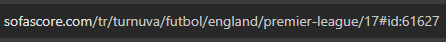
Importing the Package
from datafc.sofascore import (
match_data,
match_odds_data,
match_stats_data,
momentum_data,
lineups_data,
coordinates_data,
substitutions_data,
goal_networks_data,
shots_data,
standings_data
)Functions Dependent on match_data
match_df = match_data(
tournament_id=17,
season_id=61627,
week_number=24
)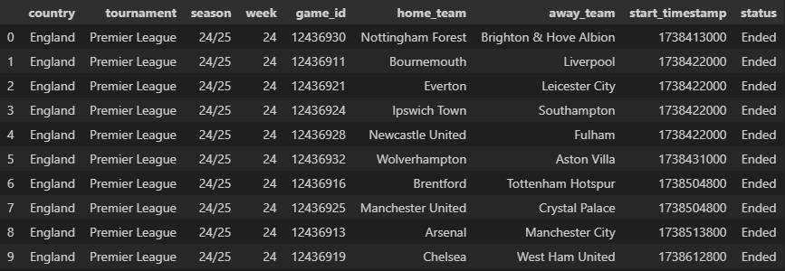
match_odds_data
match_odds_df = match_odds_data(
match_df=match_df
)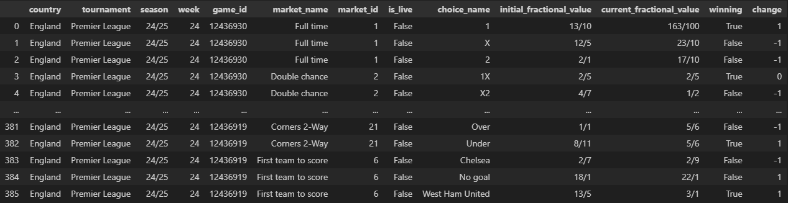
match_stats_data
match_stats_df = match_stats_data(
match_df=match_df
)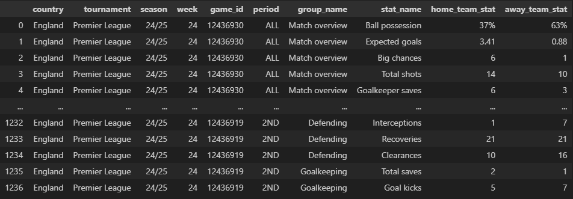
momentum_data
momentum_df = momentum_data(
match_df=match_df
)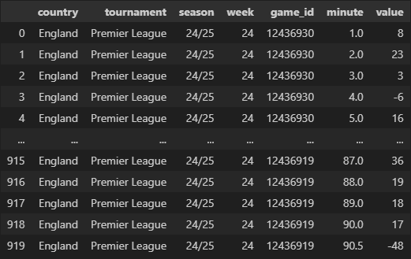
lineups_data
lineups_df = lineups_data(
match_df=match_df
)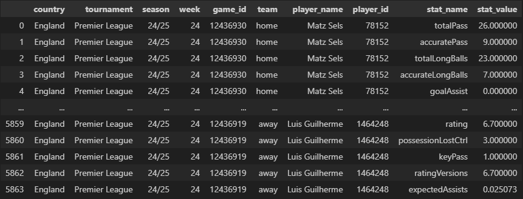
substitutions_data
substitutions_df = substitutions_data(
match_df=match_df
)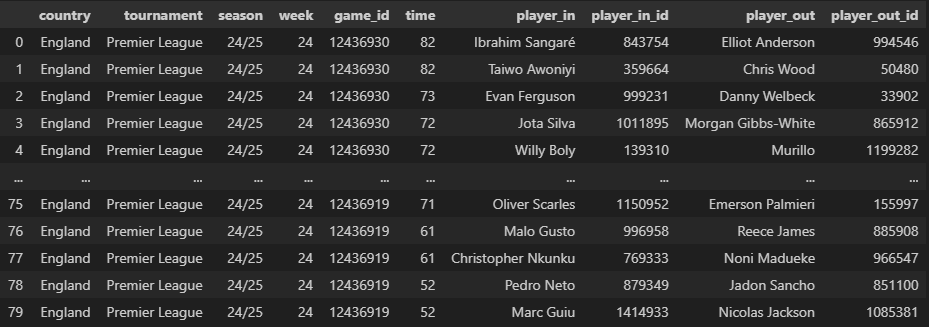
goal_networks_data
goal_networks_df = goal_networks_data(
match_df=match_df
)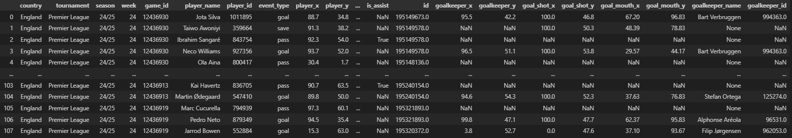
shots_data
shots_df = shots_data(
match_df=match_df
)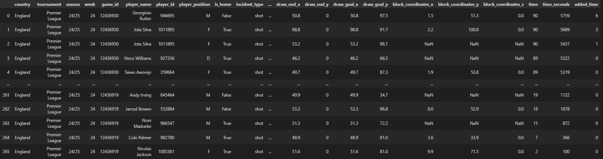
Function Dependent on lineups_data
Since lineups_data also relies on match_data, we’ve already fetched it beforehand.
coordinates_data
coordinates_df = coordinates_data(
lineups_df=lineups_df
)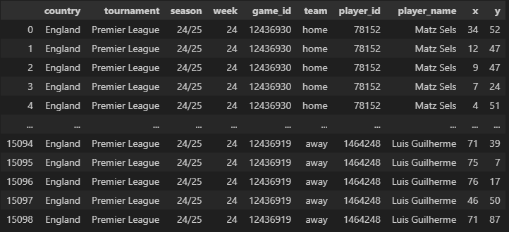
Function Without Dependencies
standings_data operates independently and does not rely on any other function.
standings_data
standings_df = standings_data(
tournament_id=17,
season_id=61627
)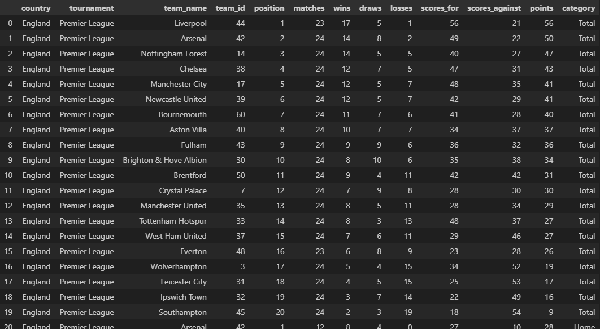
Conclusion
datafc is essentially a packaged version of the code I have been developing locally for a long time and actively using in my web application. Designed to make football data more accessible, structured, and efficient, this package automates data fetching, processing, and exporting, accelerating analytical workflows and improving accuracy.
Although it is still at version 1.0.0, it aims to establish a significant presence in the football analytics world over time with new features, performance improvements, and expanded data sources. Future releases are planned to include integrations with additional data providers, advanced analysis and visualization tools, and enhanced statistical modeling.
Your feedback and contributions will be invaluable in this journey. My ultimate goal is to further advance the infrastructure provided by datafc and make it a powerful resource for everyone working with football data.
I hope that anyone interested in football analytics will join this ecosystem and contribute by incorporating datafc into their projects.
Best regards.